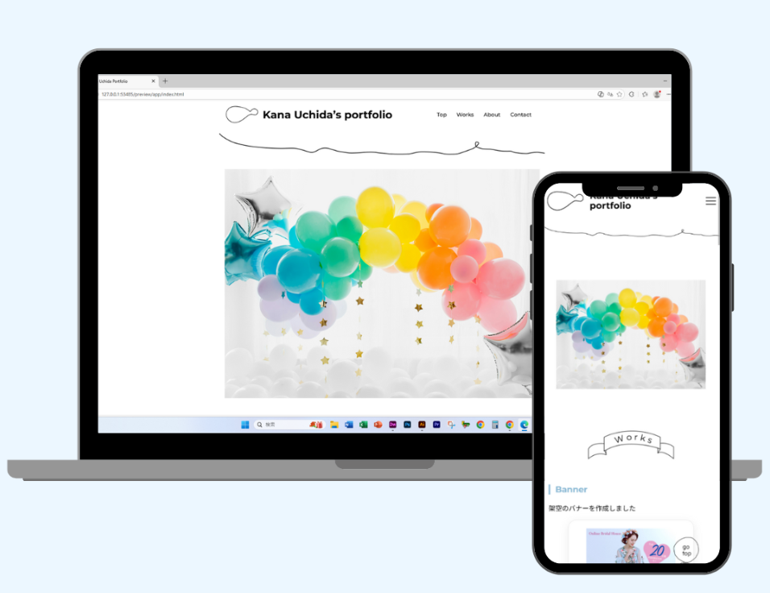

Kana Uchida’s portfolio

Portfolio
webデザイナーとして就職活動を行うにあたって、自身の経歴や制作物を伝えるためのポートフォリオを制作
制作時間：７日（（設計見直し後）
使用ツール：
使用技術：HTML / CSS / jQuery / slick

設計・コーディングの工夫
制作途中で構成を見直し、CSSをベース・レイアウト・コンポーネントごとに分けて設計しました。
各パーツの役割を整理することで、修正や追加がしやすい構成を意識しています。
この設計に切り替えてから、完成までの実制作期間は約一週間です。

デザインの工夫
情報量が多くなりすぎないよう、余白を活かしたシンプルなレイアウトを意識しました。
作品一覧では視線の流れを妨げないよう配慮を工夫し、作品そのものが自然に目に入る、見やすく心地よいデザインを目指しています。

制作意図・工夫した点
■ 目的
Webデザイナーとして自身のスキルや制作物を分かりやすく伝え、
閲覧者に「この人に任せたい」と感じてもらえるポートフォリオサイトを制作すること
■ 工夫した点
作品ごとにカテゴリー分けを行い、ユーザーが目的の情報にスムーズにたどり着ける構成にしました。
また、デザインにこだわりすぎて情報が分かりづらくならないよう、シンプルで整理されたUIを意識し、
どこに何があるか直感的に理解できる設計にしています。
さらに、複数ページのサイト制作が初めてだったため、当初はCSSの構造が複雑になってしまいましたが、
一度構成を見直し、「base.css」「layout.css」「component.css」など役割ごとに分割する形に再設計しました。
これにより、可読性と保守性を高め、今後の制作でも応用できる構造に改善しています。
トップページには動きのある要素（魚のアニメーション）を取り入れ、
印象に残る体験を演出しつつ、全体のトーンは統一することで見やすさとのバランスを取りました。
■ 苦労した点
複数ページ構成のサイトを制作にあたり、CSSの管理が煩雑になり、修正や追加がしづらくなってしまった点
■ 解決方法
CSSの役割を整理し、「base」「layout」「component」などに分割して再設計を行いました。
その結果、スタイルの管理がしやすくなり、修正や拡張がしやすい構造に改善することができました。
また、情報の優先順位を整理し、「作品 → 詳細 → 自己紹介」の流れで構成することで、
ユーザーが迷わず閲覧できる導線設計を意識しました。
使用スキル